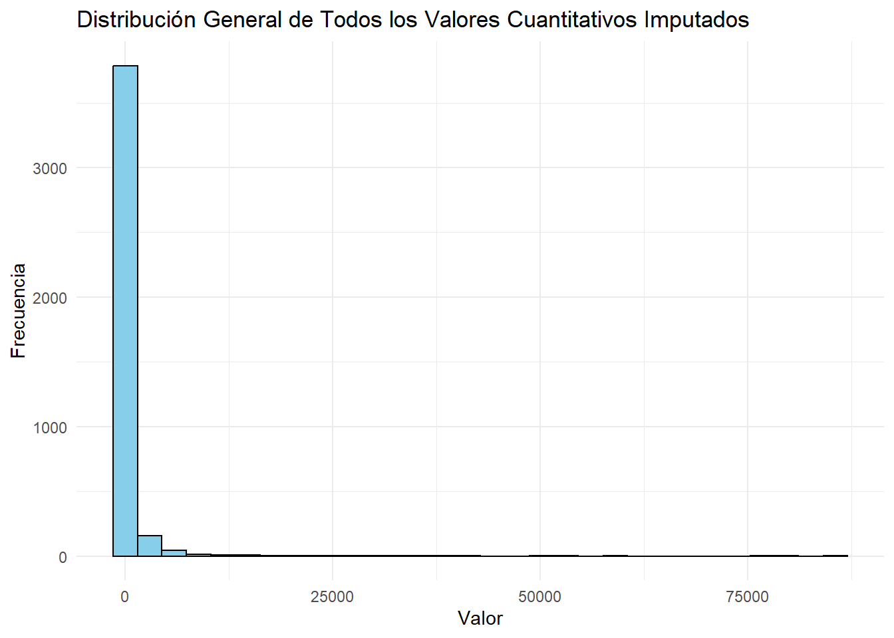
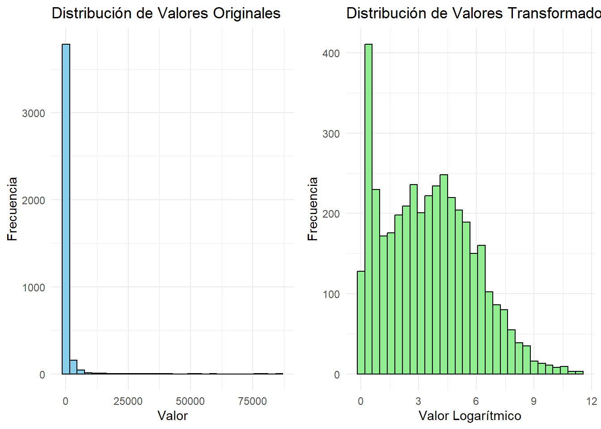
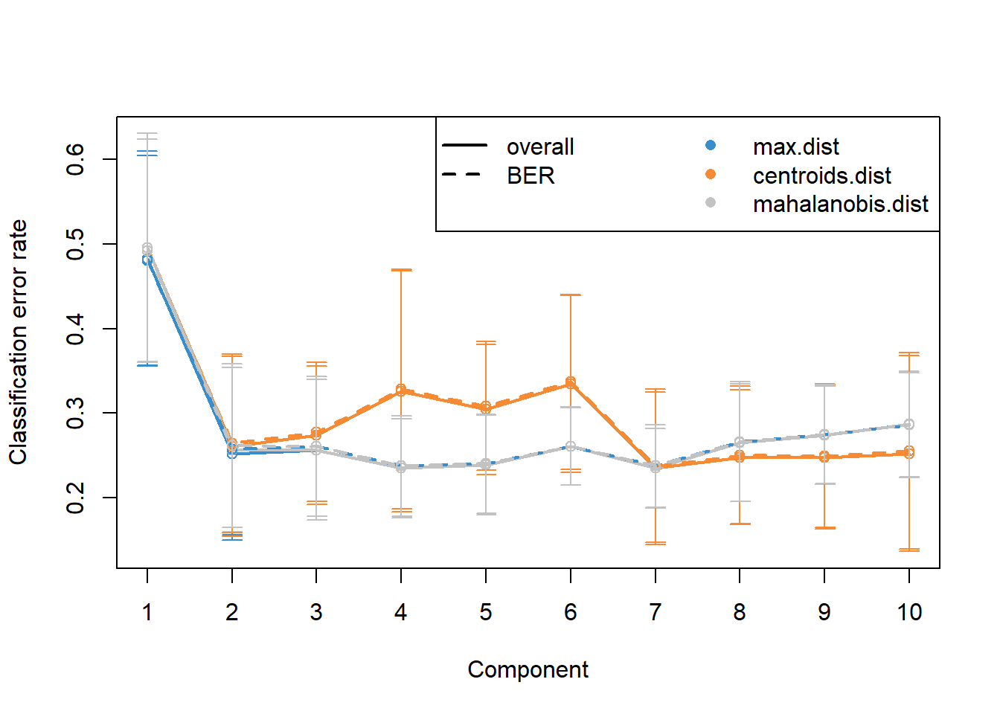
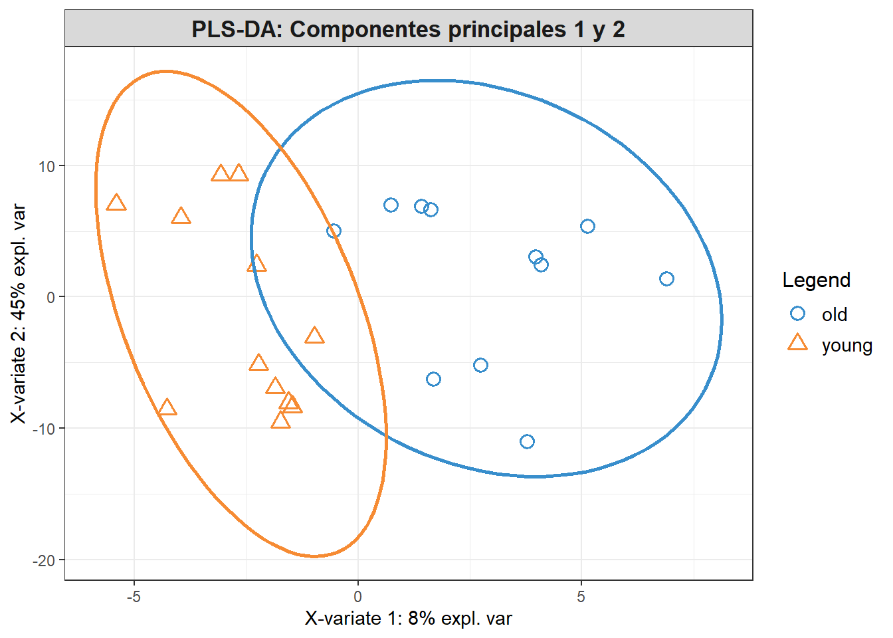
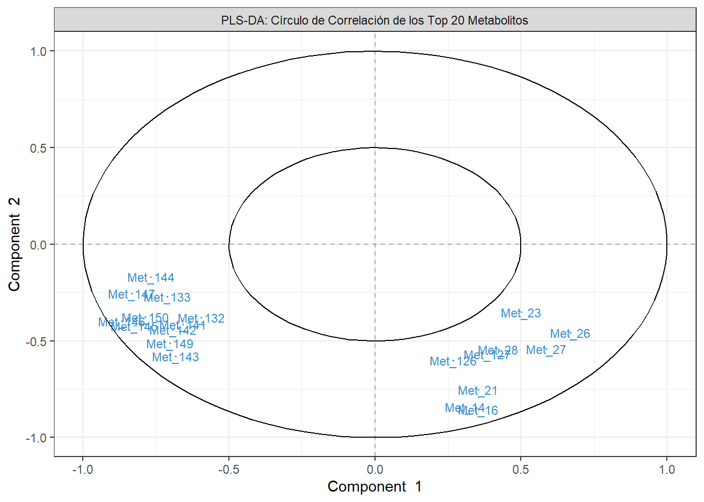

Este informe describe la creación de un objeto SummarizedExperiment a partir de datos de metabolómica, el análisis se realiza en un documento Quarto y aprovechamos la herramienta params para hacer la descarga de Metabolomics Workbench de forma dinámica. Se utilizaron diferentes herramientas bioinformáticas en R para organizar los datos fenotípicos y cuantitativos de manera estructurada y reproducible. El objetivo es preparar los datos para su uso en análisis ómicos avanzados, tomando como ejemplo un estudio donde se realiza análisis de datos con sus resultados. Todo esto se crea dentro de un proyecto en R y se utiliza GitHub como repositorio. # Objetivos del Estudio ## Objetivo General
El objetivo general es crear un SummarizedExperiment a partir de los datos descargados y analizar un estudio multivariante.
1.1 Objetivos Específicos
Descarga de datos desde URLs de forma dinámica.
Creación del SummarizedExperiment con la información descargada.
Exploración de los datos de un estudio de ejemplo.
Presentación de los resultados del estudio de ejemplo.
1.2 Objetivo del Estudio
El objetivo principal de este estudio es explorar si existen diferencias significativas en los perfiles metabólicos del tejido cardiaco entre individuos jóvenes y mayores, y determinar los metabolitos que contribuyen a esta diferenciación.
2 Materiales y Métodos
2.1 Datos Utilizados
Datos Cuantitativos: Se descargaron los datos de metabolómica utilizando el siguiente enlace del params dataset_url
Metadatos: Se descargaron desde Metadatos del estudio del params metadata_url:
2.2 Herramientas y Librerías
Se utilizaron las siguientes herramientas en R:
SummarizedExperiment para estructurar los datos.
mixOmics para realizar el análisis de componentes principales y PLS-DA.
ggplot2 para visualización de datos.
2.3 Procedimiento General
Descarga y Validación de Datos: Se descargaron los datos y metadatos asegurando que los identificadores coincidieran, evitando inconsistencias.
Creación del Objeto SummarizedExperiment: Los datos se estructuraron de forma que las filas representaran metabolitos y las columnas muestras. Se limpiaron y estandarizaron los metadatos.
Transformación Logarítmica: Para reducir el sesgo hacia la derecha en la distribución de los valores, se aplicó una transformación logarítmica a los datos cuantitativos.
Análisis PCA y PLS-DA: Se realizaron análisis PCA para identificar variabilidad en los grupos y PLS-DA para determinar los metabolitos más discriminantes
3 Resultados
Cargar Librerías Necesarias
Code
# Función para instalar y cargar paquetesload_or_install <-function(pkg) {if (!requireNamespace(pkg, quietly =TRUE)) {message(sprintf("Instalando el paquete: %s", pkg))install.packages(pkg, dependencies =TRUE) }suppressPackageStartupMessages(library(pkg, character.only =TRUE))}# Lista de paquetes necesariospackages <-c("here", "SummarizedExperiment", "httr", "rvest", "pheatmap", "tidyr","impute", "ggplot2", "gridExtra")# Instalar y cargar todos los paquetes necesariosinvisible(lapply(packages, load_or_install))# Instalar mixOmics desde Bioconductor si aún no está instaladoif (!requireNamespace("mixOmics", quietly =TRUE)) {if (!requireNamespace("BiocManager", quietly =TRUE)) {message("Instalando BiocManager para instalar mixOmics")install.packages("BiocManager") } BiocManager::install("mixOmics")}# Cargar mixOmicssuppressPackageStartupMessages(library(mixOmics))
3.1 Descarga de los datos desde el repositorio “metabolomicsWorkbench”
Para nuestro trabajo seleccionamos obtener la informacion desde el repositorio a travez de la descarga directa, usando los URLs, esta parte del trabajo es de froma dinamica por lo que creamos un archivo en quarto que nos permita manejar los params: “dataset_url y metadata_url”, con dataset_url obtendermos los datos para “assay”, “colData” y “rowData” y con metadata_url obtendremos la infrormacion de los metadatos asociados al conjunto de datos, este codigo esta preparado para recibir datos en formato plano .txt y HTML
El codigo maneja: * La cracion de la carpeta “data” si no existe. Guarda los archivos descargados y organizar el proyecto. * A partir de ambas URLs (dataset_url y metadata_url), se extrae un identificador único del estudio mediante una expresión regular (ST\d{6}). Este identificador se compara entre ambos enlaces para verificar que efectivamente corresponden al mismo estudio. Si los identificadores no coinciden, se detiene el proceso y se muestra un mensaje de error al usuario, indicando la discrepancia. Esto es fundamental para asegurar la coherencia en los datos descargados. * Asignación de Nombres a los Archivos: Una vez verificado el identificador del estudio, se genera un nombre de archivo único basado en este ID * Descarga de los archivos * Durante el proceso se manejan mensajes y excepciones: * Se considero evitar descargas innecesarias y sobreescribir informacion
3.1.1 Preparacion para la descarga
Code
dataset_url <- params$dataset_urlmetadata_url <- params$metadata_url# Definir y crear la carpeta de salida si no existeoutput_folder <-file.path(here::here(), "data")if (!dir.exists(output_folder)) {dir.create(output_folder, showWarnings =FALSE, recursive =TRUE)message("[INFO] Carpeta de salida creada: ", output_folder)} else {message("[INFO] Carpeta de salida ya existente: ", output_folder)}# Expresión regular para extraer el ID del estudiostudy_id_pattern <-"ST\\d{6}"# Extraer y comparar los identificadores del estudio de ambas URLsmessage("[INFO] Extrayendo identificador de estudio de las URLs proporcionadas...")dataset_study_id <-regmatches(dataset_url, regexpr(study_id_pattern, dataset_url))metadata_study_id <-regmatches(metadata_url, regexpr(study_id_pattern, metadata_url))# Verificar si los identificadores de estudio coincidenif (identical(dataset_study_id, metadata_study_id)) { study_id <- dataset_study_id # Asignar el ID de estudio si coincidenmessage("[ÉXITO] Identificador de estudio verificado correctamente: ", study_id)} else {stop("[ERROR] Las URLs proporcionadas no corresponden al mismo estudio. Verifique los parámetros.\n","[DEBUG] ID del dataset: ", dataset_study_id, " | ID de metadatos: ", metadata_study_id)}
3.1.2 Descargar Datos del Estudio
Code
# Generar un nombre de archivo compatible y ruta completadataset_filename <-sprintf("dataset_%s.txt", study_id)dataset_filepath <-file.path(output_folder, dataset_filename)# Descargar el archivo si aún no existe en el sistema de archivosif (!file.exists(dataset_filepath)) {message("Descargando el archivo desde ", dataset_url, "...")tryCatch( {download.file(dataset_url, destfile = dataset_filepath, mode ="wb")if (!file.exists(dataset_filepath)) stop("Error: No se pudo descargar el archivo.") },error =function(e) {stop("Ocurrió un error durante la descarga: ", e$message) } )} else {message("El archivo ya ha sido descargado previamente.")}# Cargar el archivo de datosdatos <-tryCatch( {read.delim(dataset_filepath, header =TRUE, sep ="\t", stringsAsFactors =FALSE) },error =function(e) {stop("[ERROR] No se pudo cargar el archivo de datos: ", e$message) })
3.1.3 Leer los Datos y Revisar su Estructura
Code
# Verificar las dimensiones del datasetn_filas <-nrow(datos)n_columnas <-ncol(datos)message("[INFO] Número de muestras (filas): ", n_filas)message("[INFO] Número de metabolitos u otras variables (columnas): ", n_columnas)# Mostrar solo las primeras 5 filas y las primeras 10 columnas para un resumen compactoresumen_datos <- datos[1:5, 1:min(5, n_columnas)]message("[INFO] Resumen del dataset (primeras 5 filas y hasta 5 columnas):")# Usando knitr::kable() para tablaknitr::kable(resumen_datos, caption ="Resumen del Dataset: Primeras 5 Filas y 5 Columnas")
Resumen del Dataset: Primeras 5 Filas y 5 Columnas
Samples
group
X1261.82410453_13.462
X1421.94930453_13.687
X1443.93365453_13.687
young_1
Sample source:Heart | Sex:M | Age group:young
8.2889
36.8705
6.0068
young_2
Sample source:Heart | Sex:M | Age group:young
9.1300
11.2341
3.2156
young_3
Sample source:Heart | Sex:M | Age group:young
9.0886
7.6486
5.4975
young_4
Sample source:Heart | Sex:M | Age group:young
7.9396
13.3439
4.6751
young_5
Sample source:Heart | Sex:M | Age group:young
8.9580
19.0862
14.1100
3.2 Creacion de SummarizedExperiment
Para crar el SummarizedExperiment tenemos que tener en cuenta lo siguiente: Las muestas estan represenadas en la filas y las variables en columnas para cumplir con la estructura del SummarizedExperiment transponemos la matriz de datos.
La columna group contenía información fenotípica agrupada, como la fuente de la muestra (source), el sexo (sex), y el grupo de edad (age_group). Se utilizó la función tidyr::separate() para dividir esta columna en tres columnas distintas. Adicionalmente, se limpiaron los valores de cada columna para eliminar los prefijos (“Sample source:”, “Sex:”, “Age group:”) y se trató cualquier valor faltante, reemplazando con NA cuando fuera necesario.
Las columnas fueron renombradas de forma consistente como Met_1, Met_2, etc., para hacer que el conjunto de datos fuera más comprensible y organizado.
Los metadatos (colData) se estructuraron utilizando las columnas Sample, source, sex, y age_group. La columna Sample fue eliminada del colData como columna independiente y, en cambio, se utilizó como identificador (nombres de fila) para evitar redundancias. Los datos cuantitativos de los metabolitos (assay) se organizaron en una matriz, donde las muestras fueron establecidas como columnas y los metabolitos como filas.
Finalmente, se utilizó la función SummarizedExperiment() del paquete SummarizedExperiment para crear el objeto.
3.2.1 Creacion de “assays” y “colData” para el SummarizedExperiment
Code
library(dplyr)library(tidyr)# Paso 1: Renombrar las primeras dos columnas para mayor claridadcolnames(datos)[1:2] <-c("Sample", "group")# Paso 2: Eliminar espacios innecesarios y estandarizar formatodatos$group <-trimws(datos$group)# Paso 3: Verificar si alguna fila tiene valores inesperados (faltan delimitadores)# Para asegurarnos de que todas las filas tengan al menos dos delimitadores "|"datos$group <-ifelse(grepl("\\|", datos$group), datos$group,paste(datos$group, "| Sex:NA | Age group:NA") # Completar con 'NA' si no hay delimitadores)# Paso 4: Separación usando tidyr::separate(), completando faltantes a la derechadatos <- datos %>%separate(group, into =c("source", "sex", "age_group"), sep ="\\|", remove =TRUE, fill ="right")# Paso 5: Limpiar los valores para cada columna resultante# Eliminar los prefijos que contienen información adicionaldatos$source <-trimws(gsub("Sample source:", "", datos$source))datos$sex <-trimws(gsub("Sex:", "", datos$sex))datos$age_group <-trimws(gsub("Age group:", "", datos$age_group))# Paso 6: Reemplazar 'NA' strings que se generaron si la columna no existía originalmentedatos$sex[is.na(datos$sex) | datos$sex =="NA"] <-NAdatos$age_group[is.na(datos$age_group) | datos$age_group =="NA"] <-NA# Paso 7: Renombrar las columnas de los metabolitos para ser más comprensiblesnum_metabolitos <-ncol(datos) -4# Descontar Sample, source, sex, age_groupnuevo_nombres <-paste0("Met_", 1:num_metabolitos)colnames(datos)[5:ncol(datos)] <- nuevo_nombres# Paso 8: Separar los metadatos y los datos cuantitativos# Crear 'col_data' con los metadatos, usando 'Sample' como rownamescol_data <- datos[, c("Sample", "source", "sex", "age_group")] # Metadatosrownames(col_data) <- col_data$Sample # Establecer la columna 'Sample' como nombres de filacol_data$Sample <-NULL# Eliminar la columna 'Sample' ya que está en rownames# Crear un data frame de datos cuantitativos con el resto de las columnas (excluyendo también la columna 'Sample')assay_data <- datos[, !(colnames(datos) %in%c("Sample", "source", "sex", "age_group"))]# Paso 9: Convertir los datos cuantitativos a una matriz y transponerlaassay_matrix <-as.matrix(assay_data)assay_matrix <-t(assay_matrix)# Asegurarse de que los nombres de las columnas de assay_matrix coincidan con los nombres de las muestrascolnames(assay_matrix) <-rownames(col_data)# Paso 10: Crear el SummarizedExperiment con los datos cuantitativos y los metadatoslibrary(SummarizedExperiment)se <-SummarizedExperiment(assays =list(counts = assay_matrix),colData = col_data)# Mostrar un mensaje simple de confirmaciónmessage("El objeto SummarizedExperiment se ha creado correctamente.")
Se ha creado es SummarizedExperiment con los objetos “assays” y “colData”, ahora generaremo los metadatos del estudio y lo agregaremos al documento.
3.2.2 Descargar Metadatos del Estudio
Code
# Definir el nombre y la ruta del archivo de metadatosmetadata_filename <-paste0("metadata_", study_id, ".html")metadata_filepath <-file.path(output_folder, metadata_filename)# Asegurarse de que la carpeta de salida existeif (!dir.exists(output_folder)) {dir.create(output_folder, recursive =TRUE, showWarnings =FALSE)}# Descargar el archivo de metadatos si aún no se ha descargadoif (!file.exists(metadata_filepath)) {message("Descargando el archivo de metadatos desde ", metadata_url, "...") response <- httr::GET(metadata_url)# Verificar si la descarga fue exitosaif (httr::status_code(response) >=200&& httr::status_code(response) <300) {writeBin(httr::content(response, "raw"), metadata_filepath)message("Metadatos descargados correctamente.") } else {stop("Error al descargar los metadatos. Código de estado: ", httr::status_code(response)) }} else {message("El archivo de metadatos ya existe en la ruta: ", metadata_filepath)}
3.2.3 Procesar los Metadatos desde HTML
Code
# Procesar los Metadatos desde HTML# Procesar los Metadatos desde HTML y Guardarlos en una Listametadata_html <-read_html(metadata_filepath)# Función auxiliar para manejar posibles elementos faltantesextract_text_safe <-function(html, xpath) { element <- html %>%html_element(xpath = xpath)if (is.null(element)) {return(NA) # Si el elemento no se encuentra, devolver NA } else {return(html_text(element, trim =TRUE)) }}# Extraer campos específicos y almacenarlos en una listametadata_list <-list(study_id = study_id,study_title =extract_text_safe(metadata_html, "//td[b='Study Title']/following-sibling::td"),study_summary =extract_text_safe(metadata_html, "//td[b='Study Summary']/following-sibling::td"),institute =extract_text_safe(metadata_html, "//td[b='Institute']/following-sibling::td"),department =extract_text_safe(metadata_html, "//td[b='Department']/following-sibling::td"),laboratory =extract_text_safe(metadata_html, "//td[b='Laboratory']/following-sibling::td"),last_name =extract_text_safe(metadata_html, "//td[b='Last Name']/following-sibling::td"),first_name =extract_text_safe(metadata_html, "//td[b='First Name']/following-sibling::td"),address =extract_text_safe(metadata_html, "//td[b='Address']/following-sibling::td"),contact_email =extract_text_safe(metadata_html, "//td[b='Email']/following-sibling::td"),submit_date =extract_text_safe(metadata_html, "//td[b='Submit Date']/following-sibling::td"),release_date =extract_text_safe(metadata_html, "//td[b='Release Date']/following-sibling::td"),num_groups =extract_text_safe(metadata_html, "//td[b='Num Groups']/following-sibling::td") %>%as.numeric(),total_subjects =extract_text_safe(metadata_html, "//td[b='Total Subjects']/following-sibling::td") %>%as.numeric(),num_males =extract_text_safe(metadata_html, "//td[b='Num Males']/following-sibling::td") %>%as.numeric(),num_females =extract_text_safe(metadata_html, "//td[b='Num Females']/following-sibling::td") %>%as.numeric())
3.2.4 Crear el SummarizedExperiment Utilizando el Diccionario de Metadatos
Code
# Crear el objeto SummarizedExperimentse <-SummarizedExperiment(assays =list(counts = assay_matrix), # Datos cuantitativos de los metabolitos (matriz)colData = col_data # Metadatos de las muestras ("Sample", "Group"))# Añadir los metadatos al objeto SummarizedExperimentmetadata(se) <- metadata_list# Verificar que los metadatos se han agregado correctamentemessage("Metadatos añadidos al objeto SummarizedExperiment")
3.2.5 Verificamos SummarizedExperiment
Code
# Verificar 'colData' message("Resumen de los metadatos en SummarizedExperiment:")print(colData(se))
DataFrame with 23 rows and 3 columns
source sex age_group
<character> <character> <character>
young_1 Heart M young
young_2 Heart M young
young_3 Heart M young
young_4 Heart M young
young_5 Heart M young
... ... ... ...
old_9 Heart M old
old_10 Heart M old
old_11 Heart F old
old_12 Heart M old
old_13 Heart F old
Code
# Verificar las primeras filas de los datos cuantitativos message("Primeras filas de la matriz cuantitativa (Assay):")print(assay(se)[1:5, 1:5]) # Mostrar las primeras 5 filas y 5 columnas de los datos cuantitativos
# Verificar los metadatos del estudiomessage("Metadatos del estudio en SummarizedExperiment:")study_metadata <-metadata(se)# Mostrar cuántos elementos de metadatos existen en el objetometadata_count <-length(study_metadata)message("Número total de elementos de metadatos en el objeto SummarizedExperiment: ", metadata_count)# Verificar si hay algún metadato nulo (en caso de falta de información)missing_metadata_count <-sum(sapply(study_metadata, is.null))message("Número de metadatos nulos o ausentes: ", missing_metadata_count)# Confirmar que todos los metadatos están presentesif (missing_metadata_count ==0) {message("Todos los metadatos están presentes y completos.")} else {message("Hay ", missing_metadata_count, " metadatos ausentes en el objeto.")}
hemos detectadco que Assay contiene la fila “Sample” esto puede ocacionar problemas en el analisis ya que esta matriz solo debe contener datos numericos.
#Eliminar fila salple
Code
assay_matrix <-assay(se)if ("Sample"%in%rownames(assay_matrix)) { assay_matrix <- assay_matrix[-which(rownames(assay_matrix) =="Sample"), ]}# Paso 3: Actualizar el SummarizedExperiment con la nueva matriz cuantitativa sin la fila "Sample"assays(se) <-list(counts = assay_matrix)# Paso 4: Verificar la matriz cuantitativa después de la eliminaciónmessage("Primeras filas de la matriz cuantitativa después de eliminar la fila 'Sample':")print(assay(se)[1:5, 1:5])
# Verificar nuevamente los metadatos y la estructura del SummarizedExperimentmessage("Resumen de los metadatos en SummarizedExperiment:")print(colData(se))
DataFrame with 23 rows and 3 columns
source sex age_group
<character> <character> <character>
young_1 Heart M young
young_2 Heart M young
young_3 Heart M young
young_4 Heart M young
young_5 Heart M young
... ... ... ...
old_9 Heart M old
old_10 Heart M old
old_11 Heart F old
old_12 Heart M old
old_13 Heart F old
Code
# Verificar los metadatos del estudiomessage("Metadatos del estudio en SummarizedExperiment:")study_metadata <-metadata(se)# Mostrar cuántos elementos de metadatos existen en el objetometadata_count <-length(study_metadata)message("Número total de elementos de metadatos en el objeto SummarizedExperiment: ", metadata_count)# Verificar si hay algún metadato nulo (en caso de falta de información)missing_metadata_count <-sum(sapply(study_metadata, is.null))message("Número de metadatos nulos o ausentes: ", missing_metadata_count)# Confirmar que todos los metadatos están presentesif (missing_metadata_count ==0) {message("Todos los metadatos están presentes y completos.")} else {message("Hay ", missing_metadata_count, " metadatos ausentes en el objeto.")}
3.3 Exploracion del dataset
3.3.1 Informacion del estudio
Aqui tambien se trabajo dinamicamente aprovechando la informacion almacenda en medatada del SummarizedExperiment
Code
# Obtener los metadatos del estudio desde el objeto SummarizedExperimentstudy_metadata <-metadata(se)message("Vamos a analizar el estudio titulado: '", study_metadata$study_title, "'.")message("Este estudio tiene el identificador: ", study_metadata$study_id, ".")# Descripción del estudiomessage("\nResumen del estudio:")if (!is.null(study_metadata$study_summary)) {message(study_metadata$study_summary)}# Fechas importantes del estudioif (!is.null(study_metadata$submit_date) &&!is.null(study_metadata$release_date)) {message("\nFecha de envío del estudio: ", study_metadata$submit_date)message("Fecha de publicación: ", study_metadata$release_date)}# Información sobre los grupos y sujetos del estudiomessage("\nEste estudio cuenta con ", study_metadata$num_groups, " grupos.")message("El total de sujetos involucrados en el estudio es de: ", study_metadata$total_subjects, " individuos.")message("De estos, ", study_metadata$num_males, " son hombres y ", study_metadata$num_females, " son mujeres.")
3.4 Control de calidad de los datos
3.4.1 Control de calidad de los metadatos (colData)
Verificar Valores Faltantes (NA) o (NULL) y que las categorias de las variables no contengan errores tipograficos.
Code
# Verificar valores faltantesmessage("Número de valores NA por columna en colData:")print(colSums(is.na(colData(se))))
[1] 0 0 0
Code
# Verificar valores únicos para identificar inconsistenciasmessage("Valores únicos en 'sex':")print(unique(colData(se)$sex))
[1] "M" "F"
Code
message("Valores únicos en 'age_group':")print(unique(colData(se)$age_group))
[1] "young" "old"
3.4.2 Control de Calidad de la Matriz de Datos Cuantitativos (assay)
Verificar si existen valores extemos o atipicos y tambien verificar la distribucion de los valores cuantitativos en busca de sesgo.
3.4.2.1 Primero revisaremso el tipo de datos
Code
# Extraer la matriz cuantitativa del objeto SummarizedExperimentassay_matrix <-assay(se)# Verificar los tipos de datos en la matriz cuantitativaprint("Verificando tipos de datos en la matriz cuantitativa:")
[1] "Verificando tipos de datos en la matriz cuantitativa:"
Code
tipo_de_datos <-sapply(assay_matrix, class)print(unique(tipo_de_datos)) # Mostrar los tipos de datos presentes en la matriz
[1] "numeric"
Si algún valor no es numérico, convertir toda la matriz a numérico
3.4.2.2 Transformado a datos numericos
Code
# Si algún valor no es numérico, convertir toda la matriz a numéricoif (!all(tipo_de_datos =="numeric")) {print("Algunos valores no son numéricos, convirtiendo a NA donde sea necesario...")# Convertir todos los valores a numéricos, transformando valores no numéricos en NA assay_matrix_cleaned <-apply(assay_matrix, 2, function(x) as.numeric(as.character(x)))} else {print("Todos los datos son numéricos.") assay_matrix_cleaned <- assay_matrix}
[1] "Todos los datos son numéricos."
3.4.2.3 Identificar valores extremos, NA en la matriz de
Code
# Verificar cuántos valores NA hay en total en la matriz cuantitativana_count_total <-sum(is.na(assay_matrix))# Calcular el porcentaje de valores NAtotal_values <-length(assay_matrix) # Número total de elementos en la matrizna_percentage <- (na_count_total / total_values) *100# Mostrar el número total y el porcentaje de valores NAmessage("Número total de valores NA en la matriz cuantitativa: ", na_count_total)message("Porcentaje de valores NA en la matriz cuantitativa: ", round(na_percentage, 2), "%")
el numero de valores NA es de 4 que representa un 0.1% este valor es lo suficiente bajo para poder ser solo eliminado sin afectar el analisis
3.4.2.4 Eliminar Filas con Valores NA
Code
# Paso 1: Eliminar las filas que contienen valores NA en la matriz cuantitativaassay_matrix_cleaned <- assay_matrix[complete.cases(assay_matrix), ]# Paso 2: Verificar la nueva dimensión de la matriz cuantitativa después de eliminar las filas con NAprint(paste("Número de metabolitos después de eliminar filas con NA:", nrow(assay_matrix_cleaned)))
[1] "Número de metabolitos después de eliminar filas con NA: 176"
Code
print(paste("Número de muestras:", ncol(assay_matrix_cleaned)))
[1] "Número de muestras: 23"
Code
# Paso 3: Verificar cuántos valores NA quedan después de la eliminaciónna_count_after_removal <-sum(is.na(assay_matrix_cleaned))print(paste("Número total de valores NA después de eliminar filas con NA:", na_count_after_removal))
[1] "Número total de valores NA después de eliminar filas con NA: 0"
3.5 Exploracion de los datos
3.5.1 Resumen Estadístico de la Matriz Cuantitativa
Code
# Resumen estadístico de la matriz cuantitativa después de la imputaciónprint("Resumen estadístico de la matriz cuantitativa :")
[1] "Resumen estadístico de la matriz cuantitativa :"
Code
print(summary(as.numeric(assay_matrix_cleaned)))
Min. 1st Qu. Median Mean 3rd Qu. Max.
0.00 3.61 30.05 621.73 173.60 85543.64
Los valores cuantitativos de la matriz oscilan entre un mínimo de 0.00 y un máximo de 85,543.64. Estos datos con gran variabilidad es comun en estudios de metabolómica, donde algunos metabolitos están presentes en concentraciones muy elevadas, mientras que la mayoría están en concentraciones más bajas.
La media de los valores fue de 605.26, mientras que la mediana se situó en 28.06. Hay algunos valores extremadamente altos que están afectando el promedio general, lo que es reflejo de una distribución asimétrica con una “cola larga” hacia valores mayores como vemos en el siguiente grafico.
3.5.2 Visualización General: Histograma de Todos los Valores
Code
# Convertir la matriz a un data frame para graficardata_frame <-data.frame(Values =as.numeric(assay_matrix_cleaned))# Crear el histograma de los valores imputadosggplot(data_frame, aes(x = Values)) +geom_histogram(bins =30, fill ="skyblue", color ="black") +theme_minimal() +labs(title ="Distribución General de Todos los Valores Cuantitativos Imputados", x ="Valor", y ="Frecuencia")

El Histograma tiene una distribucion no normal con sesgo a la Izquierda comprobando la informacion del resumen.
Este tipo de visualización, con tantos valores concentrados en la parte baja del eje x, dificulta la interpretación, ya que no permite ver claramente la variabilidad o patrones entre los valores más bajos y los más altos. Además, puede ser que haya valores atípicos (outliers) que estén causando la cola larga hacia la derecha, lo cual es importante investigar para no afectar el análisis posterior.
Para reducir el sesgo hacia la derecha, realizaremos una transformación logarítmica en los valores de los metabolitos. Esto permitirá que los datos se distribuyan de manera más uniforme y que los valores extremos no tengan tanto peso.
3.5.3 Normalizacion: Transformación Logarítmica
Utilizamos log1p() para calcular log(1 + valor), evitando problemas de indefinición.
Code
assay_matrix_log <-log1p(assay_matrix_cleaned)# Verificar un resumen estadístico de los datos transformados para comprobar el efectoprint("Resumen estadístico de la matriz cuantitativa transformada logarítmicamente:")
[1] "Resumen estadístico de la matriz cuantitativa transformada logarítmicamente:"
Code
print(summary(as.numeric(assay_matrix_log)))
Min. 1st Qu. Median Mean 3rd Qu. Max.
0.002896 1.527495 3.435641 3.530163 5.162507 11.356794
Code
# Crear el histograma de los valores originalesdata_frame_original <-data.frame(Values =as.numeric(assay_matrix_cleaned))histograma_original <-ggplot(data_frame_original, aes(x = Values)) +geom_histogram(bins =30, fill ="skyblue", color ="black") +theme_minimal() +labs(title ="Distribución de Valores Originales", x ="Valor", y ="Frecuencia")# Crear el histograma de los valores transformados logarítmicamentedata_frame_log <-data.frame(Values =as.numeric(assay_matrix_log))histograma_log <-ggplot(data_frame_log, aes(x = Values)) +geom_histogram(bins =30, fill ="lightgreen", color ="black") +theme_minimal() +labs(title ="Distribución de Valores Transformados (Log)", x ="Valor Logarítmico", y ="Frecuencia")# Combinar los dos histogramas en una cuadrícula de 1x2 para comparargrid.arrange(histograma_original, histograma_log, ncol =2)

Comparando ambos hitogramas (antes y despues) el sesgo se ha reducido cosiderablemente, siempre se ve la concentracion de valores cercanos a cero pero la distribucion general a mejorado. Observams un pico inicial entre 0 y 1 que es comun en los datos de metabolomica.
3.6 Análisis de los datos
3.7 Pregunta a responder: “¿Existen diferencias significativas en los perfiles metabólicos del tejido cardiaco entre individuos jóvenes y mayores, y cuáles son las principales características que permiten diferenciar entre estos grupos?”
3.7.1 Análisis de Componentes Principales PCA usando mixOmics de los datos transformados
Nos permitirá visualizar la variabilidad general en los datos y determinar si existen diferencias metabólicas que puedan separar a los individuos jóvenes de los mayores en el espacio de componentes principales. Si observamos una separación clara entre ambos grupos en el gráfico del PCA, esto sugerirá que existen patrones metabólicos diferenciados.
Code
# Paso 1: Transponer la matriz cuantitativa para el PCAx_pca <-t(assay_matrix_cleaned)# Paso 2: Realizar el PCA utilizando mixOmicspca_result <-pca(x_pca, ncomp =5, center =TRUE, scale =TRUE)# Paso 3: Visualizar la varianza explicada por cada componente principalexplained_variance <- pca_result$prop_expl_var$X # Acceder a la proporción de varianza explicada# Verificar y mostrar la varianza explicada por cada componenteif (!is.null(explained_variance)) {print("Porcentaje de varianza explicada por cada componente principal:")for (i in1:length(explained_variance)) {print(paste0("PC", i, ": ", round(explained_variance[i] *100, 2), "%")) }} else {print("No se pudo calcular la varianza explicada. Por favor, verifique los datos.")}
[1] "Porcentaje de varianza explicada por cada componente principal:"
[1] "PC1: 45.22%"
[1] "PC2: 14.59%"
[1] "PC3: 7.46%"
[1] "PC4: 6.94%"
[1] "PC5: 4.46%"
Code
# Paso 4: Graficar los dos primeros componentes principalesplotIndiv(pca_result, comp =c(1, 2), group =colData(se)$age_group, ind.names =FALSE, ellipse =TRUE, legend =TRUE,title ="PCA: Componentes principales 1 y 2",size.title =rel(1.2))
Hemos analizado las 5 primeras PCs, las primeras dos explicar el 59.81% de la varianza total, lo cual es significativo.
El grafico muestra las dos primeras componenetes, vemos un numero de muestras young agurpadas en una region apartada a lo largo de PC1 con lo que podemos deducir una diferencia significativa entre los dos grupos en los metabolitos evaluados.
3.7.1.1 Contribución de Metabolitos a los Componentes Principales
Ahora vamos a explorar los metabolitos que mas contribuyen a la variabilidad de la PC1, para ello vamos a mostra los 10 loadings mas altos.
Code
# Paso 1: Extraer los loadings del PCAloadings <- pca_result$loadings$X # Los loadings para las variables (metabolitos)# Paso 2: Mostrar los loadings más altos en PC1 (mayor contribución)loading_PC1 <- loadings[, 1] # Loadings del primer componente principal# Ordenar los metabolitos por su contribución a PC1top_metabolites_PC1 <-sort(loading_PC1, decreasing =TRUE)# Mostrar los 10 metabolitos con mayor contribución al PC1print("Metabolitos con mayor contribución al PC1 (posible diferencia entre young y old):")
[1] "Metabolitos con mayor contribución al PC1 (posible diferencia entre young y old):"
3.7.2 Análisis Discriminante PLS usando mixOmics de los datos transformados
Identificar metabolitos específicos que contribuyen a la diferenciación entre los grupos de edad. Esto nos permitirá responder qué características o metabolitos cambian de manera significativa con la edad.
Code
X <-t(assay_matrix_log)# Vector con las etiquetas de los grupos ('young' o 'old')Y <-colData(se)$age_group # Los grupos a los que pertenecen las muestras# Paso 2: Realizar PLS-DAplsda_result <-plsda(X, Y, ncomp =10, scale =TRUE)set.seed(3105)perf.plsda_result <-perf(plsda_result, validation ='Mfold', folds =3, progressBar =FALSE, nrepeat =10) plot(perf.plsda_result, sd =TRUE, legend.position ='horizontal')

Code
# Paso 3: Visualizar los resultados del PLS-DA# Gráfico de los componentes 1 y 2 para visualizar la separación entre los gruposplotIndiv(plsda_result, comp =c(1, 2), group = Y,ind.names =FALSE, ellipse =TRUE, legend =TRUE,title ="PLS-DA: Componentes principales 1 y 2",size.title =rel(1.2))

Code
# Paso 4: Graficar el círculo de correlación para analizar las variables (metabolitos)# Paso 1: Extraer los loadings del primer componente principal desde el objeto PLS-DAloading_PC1 <- plsda_result$loadings$X[, 1] # Extraer los loadings del primer componente principal# Paso 2: Seleccionar los Top 20 metabolitos con mayor valor absoluto del loadingtop_metabolites_PC1 <-names(sort(abs(loading_PC1), decreasing =TRUE))[1:20]# Paso 3: Crear una versión filtrada de los datos para PLS-DA con los Top 20 metabolitosx_filtered <- X[, top_metabolites_PC1] # Filtrar la matriz original 'x' para que contenga solo los metabolitos seleccionados# Paso 4: Realizar el PLS-DA con la versión filtrada de los datosplsda_filtered <-plsda(x_filtered, Y, ncomp =2, scale =TRUE)# Paso 5: Graficar el círculo de correlación para los Top 20 metabolitos con los componentes 1 y 2plotVar(plsda_filtered, comp =c(1, 2),var.names =TRUE, title ="PLS-DA: Círculo de Correlación de los Top 20 Metabolitos",cex =3) # Ajustar el tamaño de las etiquetas para hacerlas más legibles

3.7.3 Gráfico de Tasa de Error de Clasificación
La tasa de error disminuye significativamente con PC1 y PC2 confirmando la importacia de estas componentes, a partir de la PC3 el error se mantiene estable con lo que añadir mas componentes no mejora mucho la clasificacion.
3.7.4 Grafico PLS-DA: Componentes principales 1 y 2):
Los componentes 1 y 2 del PLS-DA parecen ser suficientes para capturar diferencias metabólicas entre los grupos young y old. La separación observada confirma que existen metabolitos clave que diferencian las dos poblaciones
3.7.5 Graficar el círculo de correlación
Los metabolitos que se encuentran más alejados del centro del círculo tienen una mayor contribución al modelo de PLS-DA. En este caso, podemos observar que los metabolitos Met_23, Met_26, Met_27, Met_28, etc., están más alejados del origen. Estos metabolitos, al estar alejados, sugieren que tienen una fuerte correlación con los componentes principales seleccionados (PC1 y PC2) y, por tanto, juegan un papel importante en la separación entre los grupos young y old.
4 Discusion y Conclusion
4.1 Descarga y Creación del SummarizedExperiment
Se logró descargar de manera exitosa los datos cuantitativos y los metadatos desde URLs proporcionadas, utilizando params para hacer la descarga de forma dinámica. Posteriormente, se creó el objeto SummarizedExperiment, integrando los datos cuantitativos con los metadatos. Esto permitió una estructura ordenada y eficiente para el análisis multivariante posterior.
4.2 Exploración de Datos del Estudio de Ejemplo
Se verificaron los valores faltantes y los tipos de datos en la matriz cuantitativa. Se observó que algunos datos presentaban valores faltantes, los cuales fueron eliminados o imputados según correspondiera. Se aplicó una transformación logarítmica a los datos cuantitativos para reducir el sesgo hacia la derecha, lo cual mejoró la distribución de los datos, facilitando el análisis multivariante.
4.3 Histograma de Valores Cuantitativos (Antes y Después de Transformación)
La transformación logarítmica mejoró la distribución de los datos, reduciendo la concentración de valores en el rango bajo, lo cual ayudó a una mejor visualización y comprensión de la variabilidad de los datos.
##Resultados del Análisis Multivariante (PCA y PLS-DA)
4.3.1 Análisis PCA
Las dos primeras componentes principales explican el 59.81% de la variabilidad total de los datos. Esto demuestra que una gran parte de la variabilidad en los perfiles metabólicos puede ser capturada por solo dos componentes. Además, se observó una agrupación clara de los individuos jóvenes en el espacio de componentes principales, lo cual sugiere diferencias metabólicas significativas entre los grupos de edad.
4.3.2 Análisis PLS-DA
El análisis PLS-DA se utilizó para identificar los metabolitos que más contribuyen a la diferenciación entre individuos jóvenes y mayores. Los resultados mostraron que los componentes 1 y 2 del PLS-DA permiten una clara separación entre los dos grupos, confirmando la existencia de patrones metabólicos diferenciados.